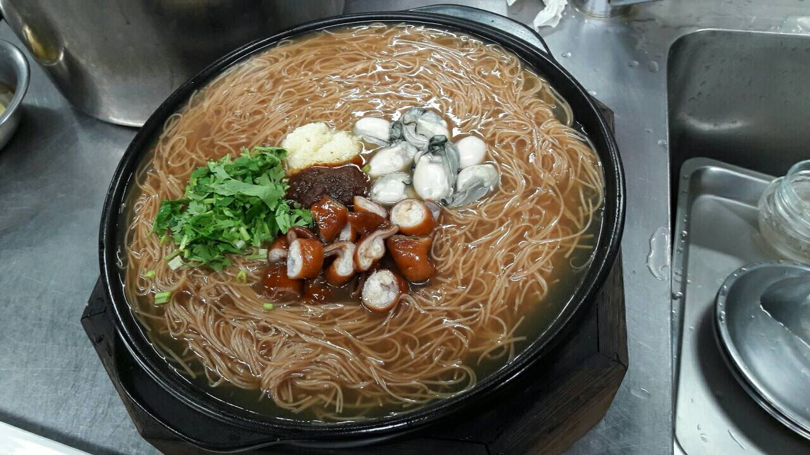

大腸麵線（太白粉2：水4）
滷汁 （200克金蘭醬油、50克冰糖、1/2雞粉、桂葉、八角、巢果）， 小火25分（從煮到最後都小火） 紅麵線煮水10分轉小火，柯仔沾太白粉炸、高湯600克下水300克 、柴魚一把大火滾轉小火熬煮一下，再把柴魚片撈起，下麵線、 鑑魚粉2T、醬油2T、糖2T,小火煮煮一下5分大火把麵煮開，太白 粉水從中間下勾芡，下烏醋1大匙拌一下即可，煮水鍋，水滾關火 丟蚵仔泡1分多，麵線撈起，下蚵仔、蒜泥、沙茶即可。
（200克金蘭醬油、50克冰糖、1/2雞粉、桂葉、八角、巢果）， 小火25分（從煮到最後都小火） 紅麵線煮水10分轉小火，柯仔沾太白粉炸、高湯600克下水300克 、柴魚一把大火滾轉小火熬煮一下，再把柴魚片撈起，下麵線、 鑑魚粉2T、醬油2T、糖2T,小火煮煮一下5分大火把麵煮開，太白 粉水從中間下勾芡，下烏醋1大匙拌一下即可，煮水鍋，水滾關火 丟蚵仔泡1分多，麵線撈起，下蚵仔、蒜泥、沙茶即可。
小火25分（從煮到最後都小火）
紅麵線煮水10分轉小火，柯仔沾太白粉炸、高湯600克下水300克 、柴魚一把大火滾轉小火熬煮一下，再把柴魚片撈起，下麵線、 鑑魚粉2T、醬油2T、糖2T,小火煮煮一下5分大火把麵煮開，太白 粉水從中間下勾芡，下烏醋1大匙拌一下即可，煮水鍋，水滾關火 丟蚵仔泡1分多，麵線撈起，下蚵仔、蒜泥、沙茶即可。
、柴魚一把大火滾轉小火熬煮一下，再把柴魚片撈起，下麵線、 鑑魚粉2T、醬油2T、糖2T,小火煮煮一下5分大火把麵煮開，太白 粉水從中間下勾芡，下烏醋1大匙拌一下即可，煮水鍋，水滾關火 丟蚵仔泡1分多，麵線撈起，下蚵仔、蒜泥、沙茶即可。
鑑魚粉2T、醬油2T、糖2T,小火煮煮一下5分大火把麵煮開，太白 粉水從中間下勾芡，下烏醋1大匙拌一下即可，煮水鍋，水滾關火 丟蚵仔泡1分多，麵線撈起，下蚵仔、蒜泥、沙茶即可。
粉水從中間下勾芡，下烏醋1大匙拌一下即可，煮水鍋，水滾關火 丟蚵仔泡1分多，麵線撈起，下蚵仔、蒜泥、沙茶即可。
丟蚵仔泡1分多，麵線撈起，下蚵仔、蒜泥、沙茶即可。